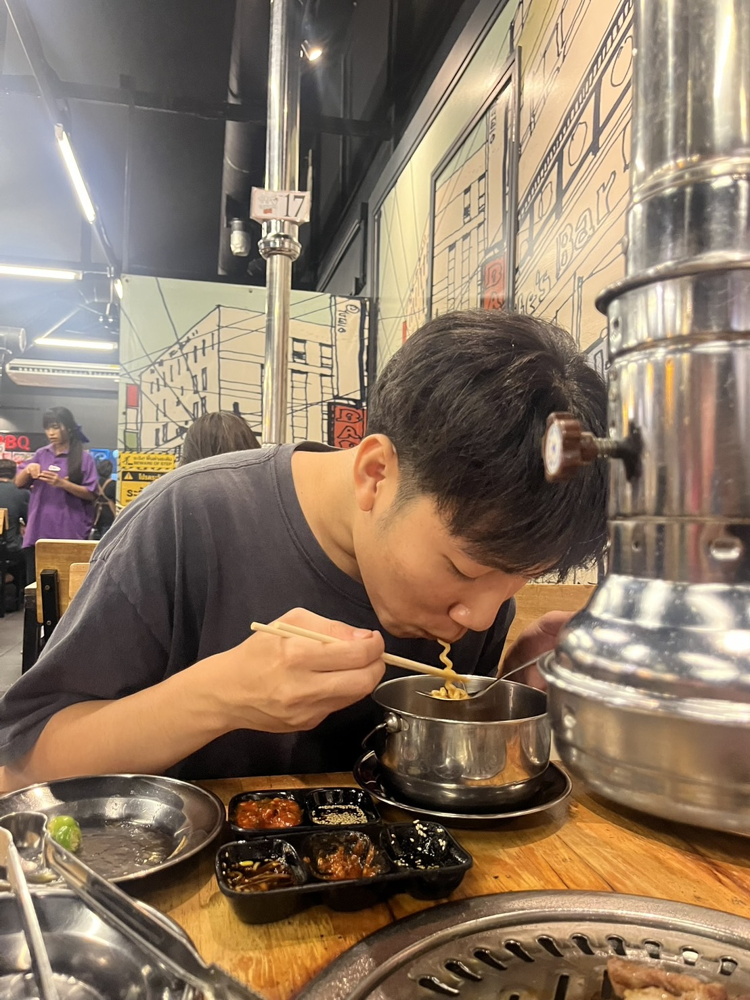

💌 จดหมายถึงแฟนที่รัก
หน้า 1 — จากใจเค้า

งงล่ะเส้ ทำไมเขียนเว็บอีกเเล้ว เบื่อมั้ยยยย เค้าเเค่หาอะไรทำรอเธอไปพบปะสังคม จะได้ทบทวนเนื้อหาการเขียนให้ไม่ลืมด้วย ได้ตั้งสองต่อ จริงๆตั้งใจทำให้ เค้าเเสดงความรักไม่เก่ง ไม่มีเงินซื้อของไปง้อ ถ้าทำไก้ก็อยากไปง้อต่อหน้า ช่วงนี้เราทะเลาะกันบ่อย บางทีรู้สึกเหมือนใจเราห่างกันหรือรักน้อยลง อย่งน้อยก็ให้เค้าทำเพื่อเยียวยาเรากันทั้งคู่ เเล้วโตไปด้วยกันนะ
หน้า 2 — ขอโทษนะ
เค้าขอโทษนะ ที่ชวนเธอทะเลาะบ่อย ๆ ที่บางทีถามนู่นนี่เยอะเกินไป อยากให้เธอปรับตัวตามเค้า เค้าไม่รู้ว่าควรทำยังไงดี เลยเผลอทำให้เธอเครียด ขอโทษที่ชอบถามเรื่องอนาคตซ้ำ ๆ จนเธออึดอัด ขอโทษที่บางครั้งเค้าคิดถึงแต่ความกลัวว่าจะเสียเธอไป จนลืมไปว่าเธอไม่ชอบถูกกด ถูกเร่ง ถูกถามซ้ำแล้วซ้ำอีก เค้าไม่เคยตั้งใจทำให้เธอเหนื่อยเลย ทุกครั้งที่ถาม ทุกครั้งที่เร่ง เค้าไม่ได้อยากควบคุม เค้าแค่ไม่มั่นใจในตัวเอง…แค่กลัวว่าซักวันเธอจะหายไป เลยพยายามรั้งเธอไว้ด้วยคำถาม ด้วยการขอความชัดเจน แต่สุดท้ายมันกลับทำให้เธอรู้สึกหนักและอยากหนีไป วันที่เธอบอกเลิกเค้ามาสองครั้ง เค้าเสียใจมาก เค้าคิดแต่ว่าจะทำยังไงไม่ให้เสียเธอไป แต่ก็ไม่รู้เลยว่าลึก ๆ แล้วเธออยากเลิกจริง ๆ หรือแค่พูดตอนโมโห แต่เค้ารู้แค่ว่า…ถ้าไม่มีเธอ เค้าคงเสียใจมากที่ไม่ได้ทำอะไรด้วยกันอีกตังเยอะ เค้าอาจไม่เข้าใจเธอดีพอ อาจพูดผิด ทำผิดหลายอย่าง แต่เค้ารู้แล้วว่าเธอไม่ชอบถูกกดดัน เธอต้องการอิสระ และเวลาของเธอ เค้าสัญญาว่าจะพยายามเรียนรู้ จะถอยหลังบ้าง เพื่อก้าวไปพร้อมเธอ เค้าจะพยายามเข้าใจมากขึ้นนะ ไม่เร่ง ไม่กดดันเธอแบบเดิม แค่อยากให้เธอรู้ว่าเค้ายังรัก และอยากอยู่ข้าง ๆ เธอไปเรื่อย ๆ เค้าอาจไม่ได้เก่งเรื่องคำพูดเหมือนที่เธออยากได้ อาจเผลอทำให้เธอเสียใจอีกบ้าง อาจจะทำตัวเป็นเด้กเอาแต่ใจเร่งรัดเธอไปบ้าง เค้ารักเธอจริง ๆ รักจนยอมปรับ ยอมเปลี่ยน ยอมเรียนรู้ทุกอย่าง ไม่อยากให้คำว่า “เลิก” กลายเป็นตอนจบของเรา แต่อยากให้มันเป็นแค่คำเตือน ที่ทำให้เรายิ่งกอดกันแน่นขึ้น
หน้า 3 — ขอบคุณด้วย

ขอบคุณนะ ที่ยังอยู่ข้าง ๆ เค้า ถึงแม้บางครั้งเค้าจะชวนทะเลาะ พูดมากเกินไป หรือถามเรื่องอนาคตบ่อยจนทำให้เธอเหนื่อย เธอยังไม่ปล่อยมือไปไหน และยังให้โอกาสเค้าได้เรียนรู้ที่จะรักเธอให้ถูกวิธี ขอบคุณที่เรามีกัน ขอบคุณนะที่เรายังรับสายกันและกันอยู่ ขอบคุณที่อดทนกับความเอาแต่ใจของเค้า ขอบคุณที่ฟังแม้ในวันที่เค้าพูดไม่ดี และขอบคุณที่ยังยิ้มให้ แม้ในวันที่เค้าทำให้เธอน้อยใจแต่ก็ยังยอมง้อ เค้ารู้ว่าเธอไม่ชอบถูกเร่ง ไม่ชอบถูกกดดัน วันนี้เค้าเข้าใจมากขึ้นแล้ว ว่าการรักเธอคือการให้พื้นที่และให้อิสระ และเค้าดีใจที่เธอสอนให้เค้าได้เข้าใจสิ่งสำคัญนี้ เธอทำให้เค้ารู้ว่าความรักไม่ใช่แค่การถามหาความมั่นใจ แต่คือการลงมือทำให้กัน เห็นคุณค่าของกัน และอยู่ด้วยกันแม้ในวันที่ไม่สมบูรณ์แบบ เค้าสัญญาว่าจะพยายามเป็นคนที่ดีขึ้นในทุก ๆ วัน จะฟังมากกว่าพูด จะกอดเธอมากกว่าที่จะโกรธเธอ จะใช้ทุกวันพิสูจน์ว่า ไม่เคยคิดจะเสียเธอไปเลยจริง ๆ ขอบคุณที่ยังจับมือเค้าไว้ ทั้งที่บางครั้งมือเค้าสั่นเพราะความกลัว ขอบคุณที่ยังฟัง แม้ในวันที่คำพูดเค้าอาจไม่น่าฟังเท่าไร ขอบคุณที่ยังเลือกเค้า ทั้งที่โลกใบนี้อาจมีคนที่ดีกว่า เพราะเธอคือคนที่ทำให้เค้าได้รุ้จักกกคำว่ารัก ซึ้งอะดิ๊ ก็เค้ารักเธอจริงๆนี่นา ถึงจะไม่ได้โตเท่าเธอ แต่เด็กก็รักเป็นมั้ยพี่ ถ้าวันนี้เธอเหนื่อย เค้าอยากขอบคุณที่เธอยังเลือกจะเดินไปด้วยกัน ถ้าวันไหนเธอท้อ เค้าอยากขอบคุณที่เธอยังเปิดโอกาสให้เค้าเป็นกำลังใจ และทุก ๆ วัน เค้าอยากขอบคุณที่ได้รักเธอ ไม่ว่าจะเจอเรื่องดีหรือร้าย เค้าอยากใช้ทุกวันขอบคุณที่มีเธออยู่ตรงนี้ เค้าดีใจนะที่ได้รักเธอ เขินอะดิ เขินยัง เขินหน่อย คนเขียนร้องไห้แล้วนะ
หน้า 4 — ที่พักใจ

ดีใจนะที่เค้าได้เห็นเธอในทุก ๆ ช่วงเวลาของชีวิต ได้เห็นเธอตอนหลับสบาย ๆ แบบไม่รู้เรื่องอะไรเลย ปลุกก็ไม่ตื่น ได้เห็นเธอตอนตื่นที่งัวเงีย หัวฟู ตาลอย เธอเก็บห้องให้ ถือของให้ ตัดเล็บให้ ถ่ายเก็บไว้ด้วย อิอิ มันเป็นภาพธรรมดาที่คนอื่นอาจไม่เห็นค่า แต่สำหรับเค้ามันมีนะ ชอบมากๆที่เค้าได้แปรงฟันพร้อมเธอในตอนเช้า ได้ยืนอาบน้ำข้างกัน ได้ขัดหลังให้เธอ ช่วงเวลาธรรมดาเหล่านี้แหละ ที่ทำให้เค้ารู้ว่า “แฟน” ที่เค้าอยากมีมันคือเธอ มันไม่ต้องหรูหราอะไรเลย ขอแค่ได้ทำเรื่องเล็ก ๆ กับเธอ แค่นั้น เธอเป็นคู่กินที่ดีที่สุดในชีวิตเค้าเลยนะ เราลองของอร่อยด้วยกันไม่รู้กี่ร้าน จนเค้าน้ำหนักขึ้นมา 10 กิโลก็ไม่สนใจ ขอบคุณทีทำให้อิ่มจัง ตังอยู่ครบ ดีใจมากๆด้วยที่เราได้ไปเที่ยวด้วยกัน ได้เก็บภาพ จิบเบียร์ฟินๆกับเธอ ได้เดินเล่นแบบไม่รีบ ได้ถ่ายรูปกับเธอ มีเธอถ่ายรูปให้ไม่บ่น ทุกทริปไม่ว่าจะใกล้หรือไกล เค้าก้อยากไปกับเธอนะ ถึงตอนนี้เราจะตังน้อยกันทั้งคู่ เค้าก็อยากทำงานเก็บตังไปเที่ยวหลายๆที่กับเธอนะ อ่านแล้วอย่าพึ่งบ่นนะคร้าบบบบ เค้าก็เก็บตังไว้ให้ตัวเองด้วยย ซื้อรถซื้อบ้านด้วย เก็บไว้เผื่อแกเฉินหรือป่วยด้วย ไม่ใช่เที่ยวอย่างเดียว เค้าอยากให้เรายังเป็นคนที่ไปเที่ยวด้วยกันในทุกๆที่นะ อีกอย่างคือเค้าโชคดีมาก ที่บางครั้งมีเธอเป็นคนจัดการทริป เค้าโชคดีจนถึงขั้นที่เธอยอมออกเงิน จ่ายค่าทริปให้ด้วย ฟรินนนน มีคนจัดกระเป๋า เธอลืมนี่มั้ย เอานี่ไปมั้ย งั้นเดี๋ยวไปซื้อพิ่มกัน น่ารักจะตายเนอะ ขอบคุรที่ได้มีเธออยู่ในเรื่องเล็ก ๆ ที่เราแบ่งปันกันในแต่ละวัน ไม่ว่าจะเป็นตอนนอน ตอนตื่น ตอนกินข้าว หรือแม้กระทั่งตอนที่เราทะเลาะกัน เพราะแม้กระทั่งน้ำตา มันก็ยังยืนยันว่าเรามีความหมายต่อกันและกัน สุดท้ายนี้…เค้าอยากบอกอีกครั้งว่า เค้าซาบซึ้งทุกโมเมนต์ที่มีเธออยู่ และต่อให้วันข้างหน้าจะมีอะไรเกิดขึ้น เค้าก็อยากใช้ทุกวันขอบคุณที่มีเธออยู่ในชีวิต
หน้า 5 — ความทรงจำที่รัก


รูปนี้ทำให้เค้านึกถึงวันที่เราอยู่ด้วยกันแบบง่าย ๆ แต่มีความสุขที่สุด เค้าอยากมีวันแบบนั้นกับเธอไปนาน ๆ อิอิ
หน้า 6 — อ่าววววงงดิ๊ ร้องไห้ยัง

เค้าอยากมีวันครบรอบกับเธอซัก100 ปีเลย คำว่าตลอดไปยันเเก่มันอาจจะเวอร์ งั้นเค้าขออยุ่กับเธอ100ปีนะ
หน้า 7 — เบื่อยังๆๆๆ
เหตุผลที่ เธอต้องมีเค้า 1. เค้าเป็นคนที่ยอมรับความไม่สมบูรณ์แบบของเธอ 2. เค้าจำรายละเอียดเล็ก ๆ ของเธอ 3. เค้าจะพยายามเปลี่ยนเพื่อเธอ — แสดงว่าความสัมพันธ์มีค่าเกินกว่าแค่คำพูด 4. เค้าพร้อมอยู่ข้าง ๆ ในวันที่เธอล้ม 5. เค้าทำให้วันธรรมดากลายเป็นความทรงจำ 6. เค้าจะอยู่เป็นกำลังใจให้ฝันและแผนของเธอ 7. เค้าพาเสียงหัวเราะกลับมาในวันที่เธอเครียด 8. เค้ารักเธอด้วยความตั้งใจ เหตุผลที่ เค้าต้องมีเธอ 1. เธอทำให้เค้ารู้สึกว่าตัวเองมีค่า — เป็นคนที่เชื่อมั่นในเขาเมื่อเขาไม่เชื่อในตัวเอง 2. เธอเติมสีสันให้ชีวิตที่เคยเรียบ — ทำให้วันธรรมดาน่าจดจำ 3. เธอรู้วิธีปลอบเมื่อเขาอ่อนแอ — รู้เวลาที่ต้องพูดและเวลาที่ต้องเงียบ 4. เธอทำให้เขาอยากเป็นคนที่ดีขึ้น — แรงจูงใจจากความรักที่แท้จริง 5. เธอเป็นแรงสนับสนุนในความสำเร็จและความล้มเหลวของเขา — ไม่ทิ้งในวันที่ยาก 6. เธอทำให้เค้ารู้ว่า “ความรัก” คือการใช้ชีวิตร่วมกัน ไม่ใช่แค่คำหวาน 7. เธอคือเหตุผลที่เขายังอยากพยายามและไม่ยอมแพ้
หน้า 8 — ทริปๆๆ

เค้าอยากมีเธอไปเที่ยวด้วยกันทุกที่ ถ้าไม่มีเธอใครจะจัดกระเป๋าให้เค้าได้ เเล้วถ้าไม่มีเค้าใครจะชมว่าเธอหล่อ เค้าต้อไปกับเธอ เธอต้องไปกับเค้านะอิอิ เพราะงั้นเราต้องมีกันเเละกันนะ
หน้า 2 — อ้วนน
เค้าชอบคำที่เธอพูดมากที่สุด ถ้าเรายังอยากมีกันอยู่อะ อยุ่ด้วยกันยันแก่ยังได้เลย งั้นมาทำกันนนนนน
หน้า 10 — รักเสมอ

ถ้าเธออ่านจบเเล้วตอนที่ไม่ได้อยู่ข้างเค้า อย่าลืมโทรมาบอกรักกันด้วยนะ